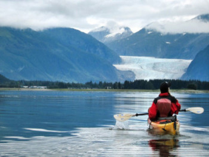
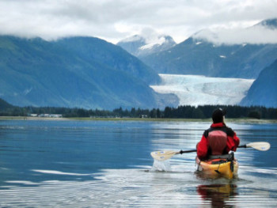

Discover the rich cultural and natural history of Alaska at the Alaska State Museum. It showcases exhibits on indigenous art, history, wildlife, and more. Enjoy kayaking or canoeing in the serene waters of Juneau's fjords and bays. You can paddle amidst breathtaking scenery and observe wildlife such as seals, sea lions, and eagles. Average high temperatures range from 58°F to 64°F, while average low temperatures range from 40°F to 50°F Juneau also receives a fair amount of rainfall, so it's advisable to pack appropriate rain gear when visiting.
ALASKA
Arizona
Arizona, also known as the Grand Canyon State, offers a diverse range of attractions and activities for visitors. The state is famous for its iconic natural wonders, such as the Grand Canyon, where travelers can marvel at the vastness of the canyon and enjoy hiking, rafting, or helicopter tours. The Sonoran Desert, with its unique flora and fauna, provides opportunities for desert exploration, off-roading, and wildlife spotting. For a taste of the Wild West, head to Tombstone, where you can step back in time and experience the infamous gunfight at the O.K. Corral
Maryland
Maryland offers a diverse range of attractions and experiences for visitors. Begin your trip in Baltimore, where you can explore the lively Inner Harbor, visit iconic sites like Fort McHenry, and immerse yourself in the vibrant arts and cultural scene. Take a day trip to Annapolis, the state capital, to wander through its historic district, tour the United States Naval Academy, and enjoy waterfront dining. For a beach getaway, head to Ocean City, where you can soak up the sun on pristine sandy beaches, indulge in delicious seafood, and enjoy the lively atmosphere of the boardwalk
Pennsylvania
Pennsylvania is a state with diverse attractions and experiences to offer. Start your trip in Philadelphia, the birthplace of America, where you can explore iconic landmarks like Independence Hall and the Liberty Bell, stroll through the historic district of Old City, and visit world-class museums such as the Philadelphia Museum of Art. Make your way to Pittsburgh, known for its striking skyline and vibrant arts scene. Explore the Andy Warhol Museum, take a ride up the Duquesne Incline for panoramic views of the city, and enjoy the diverse culinary offerings.
California

California offers a multitude of attractions and experiences that make it a fantastic destination for travelers. Start your trip in San Francisco, known for its iconic Golden Gate Bridge, vibrant neighborhoods like Chinatown and the Mission District, and its historic cable cars. Take a scenic drive down the Pacific Coast Highway, stopping at breathtaking spots like Big Sur, where rugged cliffs meet the crashing waves of the Pacific Ocean. Visit Los Angeles to experience the glamour of Hollywood, explore the vibrant art scene in neighborhoods like Venice Beach, and soak up the sun on the famous beaches of Santa Monica.
Oklahoma
Oklahoma offers a unique blend of natural beauty, vibrant culture, and rich history, making it an intriguing destination for travelers. Start your trip in Oklahoma City, the state capital, where you can explore the impressive Oklahoma City National Memorial & Museum, visit the Bricktown entertainment district for dining and nightlife, and discover the diverse exhibits at the Oklahoma City Museum of Art. Head to Tulsa, known for its art deco architecture, lively music scene, and the stunning Gathering Place park along the Arkansas River.
 
